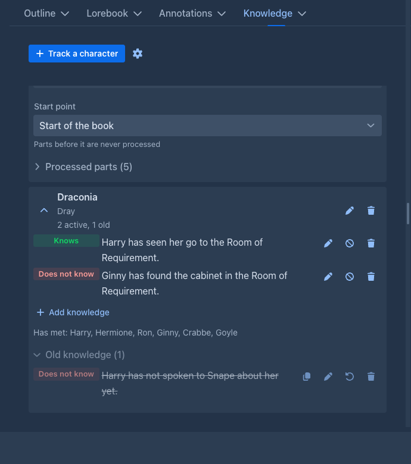
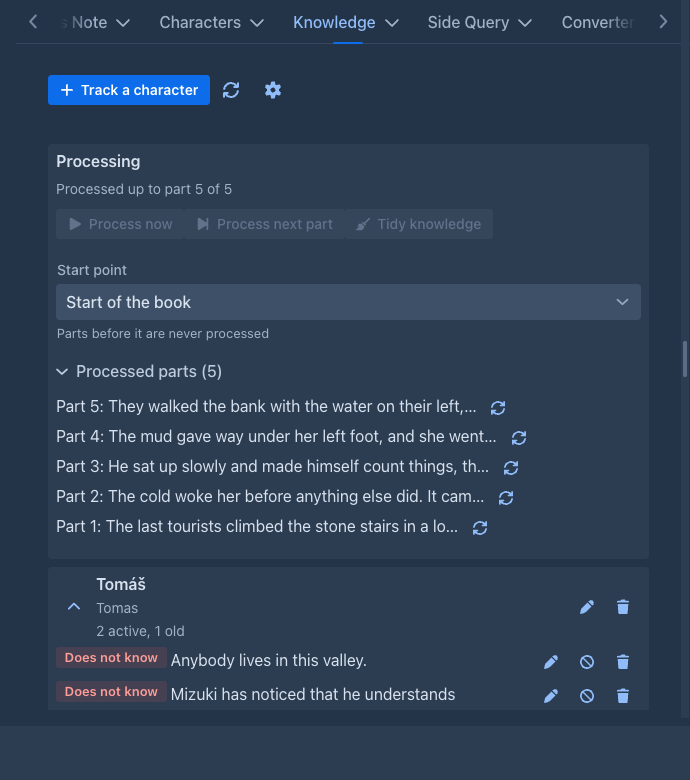
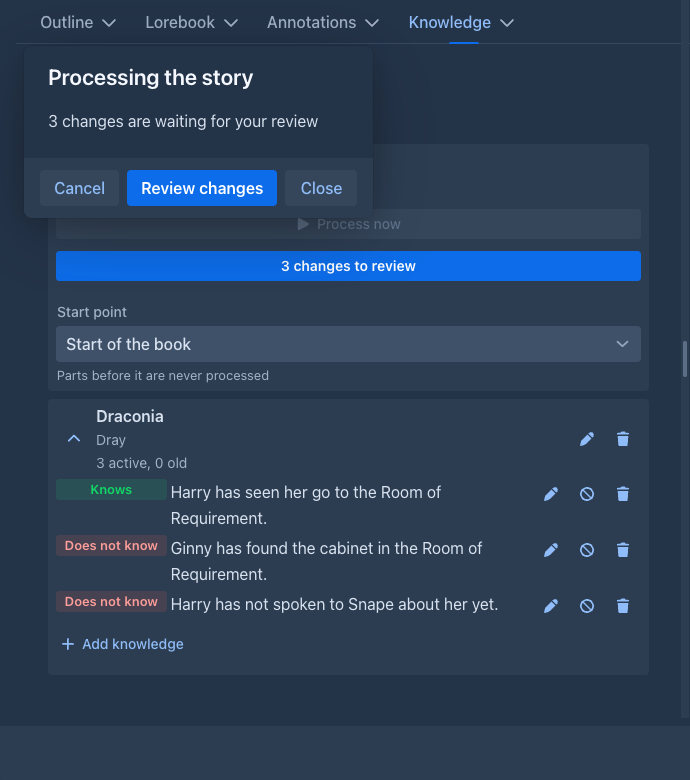
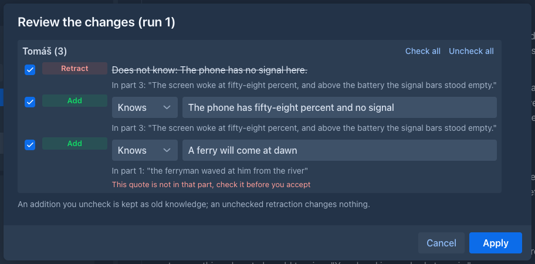

Knowledge Tracker
Keeps track of what the characters of your story know, and what they do not know, and puts it into the prompt. A model tends to let a character know things about people they have never met (their name, their job, their face) unless the instructions guard against it; with the Knowledge Tracker the prompt says, for every tracked character in the scene, what that character knows and that it knows nothing else.
You choose who is tracked. Only the characters you add to the tab are described to the model, and only while they are among the present characters of the part being written. Nothing is guessed from the story text.
The Knowledge tab
The left sidebar of the story editor gets a Knowledge tab next to Outline. Everything is saved to the book as you change it.

Track a character asks for a name and, optionally, aliases: the other names the character is written as in the Present Characters field of a part, separated by commas. A name or an alias can belong to one tracked character only.
Open a character with the arrow on its card to see what it knows:
What goes into the prompt
For every tracked character that is among the present characters, the prompt gets a block like this:
What the characters of this scene know. A character acts only on the knowledge listed for it:
Fiora knows: Mara, a courier of the Guild of Lamps and the sister of her friend Nell; she owes the Guild of Lamps forty crowns.
Fiora does not know: that her father is alive, or that Thomas is her father.
Fiora has met: Mara.
Fiora is currently with: Mara, Thomas.
Fiora has never met or heard of anyone else in this story and knows nothing else of its secrets, plans or events.Only active items are sent. The last line (the closed world line) is what stops the model from giving the character knowledge it cannot have; it covers what the story tells (people, places, secrets, plans, events), not what a person of that world knows anyway, so a character still knows its own town. You can switch the line off in the settings. A tracked character that is not present gets nothing at all, not even a line saying it does not know.
Who is present
The block is made from the Present Characters field of the part. The field is free text, so it is read leniently:
- text in brackets is ignored:
Tomáš (tired), Mizukiis Tomáš and Mizuki; - the names are split at the separators (default:
,;a new line,/,|,、，；); - what is after
-or:is a note and is dropped (Mara - wounded); - upper or lower case, accents and a leading the do not matter;
- a name has to match as a whole: Mara's brother is not Mara. Use the aliases when a character is written in more than one way. The point is that a missed match costs one block, while a false match would describe a character that is not in the scene.
The Point of View field is not read on its own, so write the point of view character among the present characters too.
Processing
The plugin follows the story. Processing reads the parts of the active branch in order, from the start point on, and
keeps a cursor (the last part it read). Without the model it notes who has met whom: a tracked character has met every name
that is in the present characters field together with it, and the block lists them. With the model it also finds what the
characters learned (see

The panel at the top of the tab shows where it stands. It reloads by itself when a new part is final (after the automatic annotation and redraft, if the book has them); if you add, edit or delete parts some other way, press the Refresh button (the arrows next to the gear) to read the story again. It has:
-
Process now: reads the parts that are not processed yet.
-
Process next part: reads only the first part that is not processed yet, one step at a time (with the model: one request for that part, whatever Parts per run says). Use it to try the settings or to look at what the model finds for a single part. The command
knowledge-processwithpartsset to 1 does the same. -
Start point: the part processing begins at (Start of the book by default). Parts before it are never read. Moving it back reads the parts from the new start again, moving it forward leaves what was read.
-
Processed parts: the latest parts that were read. A part whose text changed since it was processed (you edited or redrafted it) is marked; nothing is reprocessed by itself because of it. The button of a row, Reprocess from here, takes back what came from that part and the later ones (items and retractions you wrote by hand stay) and reads them again.
What the plugin does by itself, when Process new parts automatically is on (it is off by default):
-
Before a generation starts, the parts written since the last time are processed, so the prompt knows who has met whom. A part that is being replaced by a Regenerate or a swipe is left alone. With the model, this reads with the model only when Ask before applying is off (see below); otherwise it only notes who has met whom, and what the model finds is started from the tab, because a review is never forced on you in the middle of a generation.
-
When a part is regenerated and the new text arrives, what was learned from the old text is taken back.
-
When you swipe or switch to another branch, the cursor goes back to the last part both branches share.
Reading what the characters learn
Tick Read what the characters learn with the model in the settings. Then Process now asks the model, for the next parts of the story, what each tracked character that is in them learned: what it saw, heard, read or was told. It also says which items the story contradicts (has never met Thomas after they meet). The request holds the parts (with their point of view and present characters), what each tracked character knows now, and, as you choose, the lorebook; the model is told to leave out what a person of that world knows anyway (who the king is) and what follows from the character itself (a succubus knows she has a tail), and to report nothing it is not sure of. A tracked character that is not present in any of the parts is not asked about at all.
Every run is one request to the model. When Process now would need more than three of them (a long stretch of story that was not processed yet, or Parts per run set low), it first tells you how many parts and requests that is and roughly how much text goes through the model, and starts only when you confirm. Each request also carries the instructions, the lorebook and the knowledge of the characters, so the real cost is higher than the text alone.
When Ask before applying is off the changes are applied at once, and each one is written to the log Applied automatically in the Processing section of the tab: who got what or lost what, from which part. Nothing in the log is editable, but every row has a Revert button: an added item is declined (it stays under Old knowledge, as a declined addition does in the review), a retracted item becomes active again. A row whose item you edited, deleted or retracted by hand since is left alone. The log keeps the last 200 changes.
With Ask before applying off the new part is read as soon as it is final: when the generation is over, or, if the book has the automatic annotation (and redraft) on, when that is done, so the model reads the text you keep and works while you read it. The next generation then finds the knowledge up to date and does not wait. What is left (a run you stopped, a window you closed) is read before the next generation, as before.
While the model works a small progress panel floats over the page. It is not modal: you can keep reading and editing the story, and you can drag it by its title. Closing it hides it, the work goes on (Cancel stops it).

While the model answers, the panel shows What the model is writing as it comes: its reasoning first and then the answer, so a long wait on a slow model is not a blank bar. When the request is over the same text stays under What the model thought (a block for every request of the run, with what it answered), also when it proposed nothing and no review opens: the tab keeps a button Last run: what the model thought that opens the panel again, so you can see why nothing was added.
When the model has answered, the panel says so and shows Review changes; the same button is in the processing panel of the tab (3 changes to review). The review never opens by itself. It is a table of the changes, grouped by character:

Under the table, What the model thought (closed at first) holds the reasoning of the model that came before its answer, when the model sends it: it shows why a change was proposed, or why one that you expected is missing, so you can judge the change before you apply it. A model that does not reason shows nothing there.
Apply applies the checked changes and moves on. Cancel stops the whole series and changes nothing: the same parts are proposed again next time. An addition you uncheck is kept as old knowledge with its quote (you can restore it); an unchecked retraction leaves the item as it is. What the model said that could not be used (a character it was not asked about, an item that is not there, a change without a quote, something the character knows already) is listed under Left out. What was applied carries its part, so Reprocess from here takes it back again. If the story changed while you were reviewing (another branch, a part deleted), the changes are not applied and you process again.
Parts are read in runs of Parts per run (1 by default); one that does not fit the context of the model is cut down to what fits. A series goes on, run after run, until the last settled part; in a series that asks you, a run in which the model found nothing is skipped without asking. With Ask before applying off, the changes are applied at once and the panel keeps a log with one line per run.
The prompt was tested against a model on a few scenes, not widely: it keeps characters from learning what they did not perceive, but check what is proposed, especially for characters that are in a long scene. The request is sent to the model you choose below, with the usual cost and privacy of that service.
Tidying the knowledge
The model writes down what each character learns, and over a long story the list grows, with more small things than you want to send to the model on every request. Tidy knowledge (next to Process now, needs the model setting) asks the model to read what a character knows again, with the last processed parts of the story for context, and to
-
drop an item that is not worth keeping: trivia, a detail of a scene that everybody in it saw (the story holds it), something that later events overtook, something that says the same as another item;
-
merge several items about the same thing into one that keeps every fact.
A dropped or merged item is not deleted: it becomes Old knowledge and can be restored. The changes are reviewed, like the ones of a reading (Ask before applying decides), or applied at once and written to the log with a Revert button.
What the pass may touch is only what the model learned and you did not lock. The initial items, the ones you added or edited by hand, the locked ones and the old ones are never changed (the first two kinds and the locked ones are shown to the model so that it can see what an item would duplicate). A secret that no part has mentioned for a long time is no reason to drop it, and the prompt says so; when the model is in doubt it keeps the item. A character with fewer than Tidy: from this many items (8) items that the model learned is not tidied, and Tidy: parts of context (10) is how many of the last processed parts it reads.
Tidy automatically (a setting, off by default) runs the tidy by itself at the end of a run whose changes are applied without asking (Ask before applying off, so the automatic reading of the new parts too), once the model has read Tidy after this many parts (10) parts since the last tidy. What it changes is applied and written to the log with a Revert button, and the run's log says so. A run you review never starts a tidy by itself, and a character with too few items is skipped without asking the model.
The same from the command bar: knowledge-tidy (ask true to get the changes as a list; the open tab then shows the review
button), and lock-knowledge / unlock-knowledge with the character and the number of the item.
Settings
The gear next to Track a character:
Annotating with what the characters know
The block above keeps the model from making a character omniscient while it writes. The same records also help to find the slips that got
in anyway. When a model annotates a part (Annotate with AI, a range of parts, the
automatic annotation, /generate-annotation), the tracker tells it what the tracked characters of that part knew when the part begins,
and the editor flags a character who says, thinks or does what they cannot know: Fiora greets Thomas by name; the records say she has never
met him. The note names the fact.
-
The facts are those of the part, not of the end of the book. What a character learned in a later part is not yet known; an item that a later part retracts was still true. What the part itself brings (what is learned, who is met, what stops being true in it) is listed apart, so the first half of the part is not checked against the second.
-
Which characters. The tracked ones that are in the Present Characters of the part, are its point of view, or are named in its text (a whole word, any case, aliases too).
-
Items that are not facts at any point are left out: the ones you retracted by hand, the ones the tidy pass dropped, the ones you declined in a review.
-
Only what is recorded. The model is told that what the records do not say is not a fact, so it does not flag a character for a thing the tracker simply never heard of. Say that nothing else is known also adds "(nobody else)" to who a character has met.
-
If a part before the reviewed one was not read by the tracker, the facts say so: what the characters learned there is missing, and Process now first gives a better review.
-
The facts cost tokens in the request of the annotation, only for the parts that have a tracked character. Switch them off with Give what the characters know to the annotation.
The block as a macro
Instead of (or besides) the automatic insertion you can place the block yourself with the
{{command::knowledge-tracker-block::<characters>}} macro. The argument is the list of
the characters of the scene, so a template can pass the field of the part:
{{command::knowledge-tracker-block::{{presentCharacters}}}}The macro prints the block whether or not In prompt is on, so switch that off when you use the macro, or the model gets it twice. Depth and role do not apply to the macro (the block is part of the message that contains it). It prints nothing when none of the listed characters is tracked. The answer of a command macro is kept with the part the new part continues from, so a second generation from the same part does not see a change you made in between; a regenerate and a swipe ask again.
Commands
For the command line and for agents:
The command line splits its arguments at spaces: put a list of characters in quotes (/knowledge-tracker-block "Fiora, Mara").
Storage
Everything is stored with the book (in its attributes), so it is part of book backups and copies.